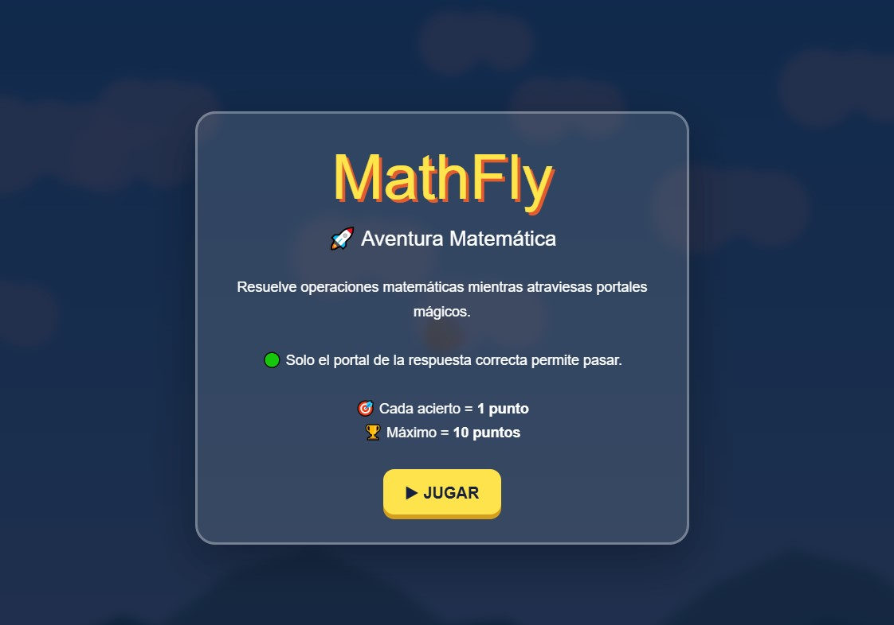
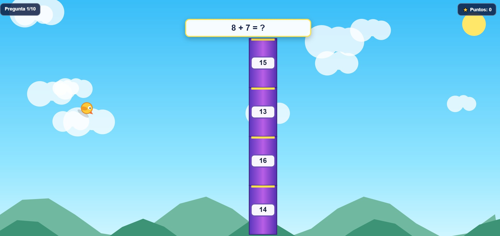
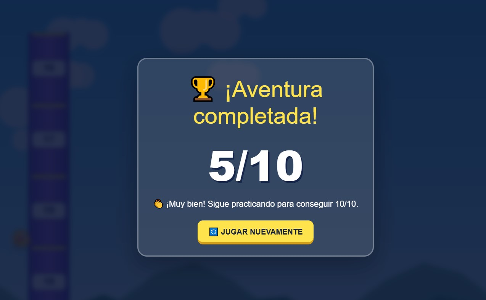

Aventura matemática educativa
MathBirds es un videojuego educativo 2D en el que el jugador controla un personaje volador mientras resuelve operaciones matemáticas.
Durante cada partida se presentan 10 preguntas. Para responder, el jugador debe mover al personaje verticalmente y atravesar la opción que considere correcta.
El proyecto combina el aprendizaje de matemáticas con una mecánica arcade de desplazamiento lateral.
El objetivo es resolver correctamente las 10 operaciones matemáticas y obtener la mayor puntuación posible.
Cada respuesta correcta otorga 1 punto y la puntuación máxima es de 10 puntos.
El personaje avanza mientras el jugador controla su movimiento vertical.
En cada pregunta aparecen cuatro posibles respuestas. El jugador debe posicionar al personaje en el carril de la respuesta que considera correcta.
El juego informa si la respuesta fue correcta o incorrecta y continúa con la siguiente pregunta.
Impulsar al personaje hacia arriba
Impulsar al personaje mediante mouse o pantalla
El juego contiene ejercicios de:
Cada partida selecciona 10 preguntas y presenta cuatro alternativas por pregunta.

Pantalla inicial

Momento de gameplay

Resultado final
Apoyo de IA: Utilizada como herramienta para estructurar el prototipo inicial mediante prompts detallados definiendo el objetivo educativo, la mecánica principal y las operaciones matemáticas.
Aporte personal: Definición de requisitos, evaluación del funcionamiento del videojuego, pruebas de preguntas y respuestas, comprobación del sistema de puntuación, organización en GitHub y redacción de la documentación.
Aprendizajes: Definición de requisitos para un videojuego educativo, diseño de mecánicas basadas en preguntas y respuestas, uso de prompts para prototipado y pruebas de ejecución.
Mejoras futuras: Efectos de sonido y música, animaciones mejoradas del personaje, niveles de dificultad, más variedad de preguntas, optimización móvil y tabla de mejores puntuaciones.